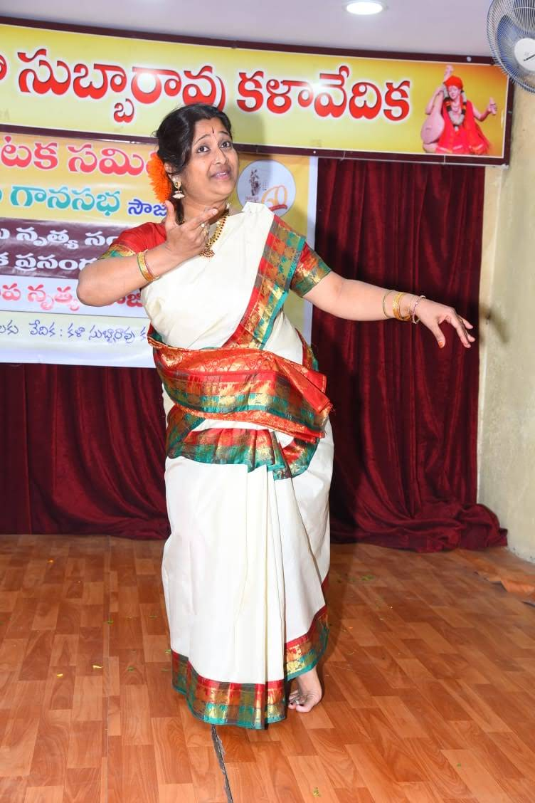

I · Mūla Guru
Sri Pandit Hemadri
Chidambara Deekshitulu
Natyacharya · Natya Kala Pitamaha
Acclaimed Kuchipudi exponent. Her legendary guru — whose style she embodies in exemplary fashion.

Artist · Guru · Choreographer Founder · Lasyāñjali Dance Academy
Initiated into Kuchipudi at the age of five, Smt. Indumathi has spent five decades shaping rhythm into prayer — and a generation of dancers in her own image.
यतो हस्तस्ततो दृष्टिः
यतो दृष्टिस्ततो मनः ।
यतो मनस्ततो भावो
यतो भावस्ततो रसः ॥
Where the hand goes, the eye follows; where the eye, the mind;
where the mind, there feeling arises; and where feeling — rasa is born.
From the strict discipline of a five-year-old's first lesson to five hundred stages.
Indumathi Ganti is an artist, performer and committed teacher of Kuchipudi. From childhood, sheer hard work and a quiet, unwavering passion towards the art moulded her into a wonderful performer.
She inherited her artistic talent from her parents — Sri A. B. Shankara Sastry and Smt. Saraswathi. Her mother, especially, is a diploma holder in Carnatic music with several concerts to her credit, and it was in that household of śloka and svara that the young Indumathi first heard the syllables that would shape her life.
The danseuse received her invitation into the Kuchipudi style of dance at a very tender age — when she was only five years old — moulded in its strict discipline and austere commitment. She embodies, in exemplary fashion, the style of her legendary guru.
Besides being a dancer and performer, Indumathi is a choreographer in her own right. She has introduced new styles in her dances, and she has a god-given gift to understand and analyse rhythm. This versatile dancer has received many awards and honours, given around five hundred performances nationally and internationally, and made an immense contribution to the field of classical dance — receiving accolades from many national and international organisations.
She has performed at the platforms of Ravindra Bharati, Tyagaraya Gana Sabha, Shilparamam, and all other prestigious platforms in Hyderabad — and on stages in Banaras, Delhi, Bombay, Bhopal, Durgapur, Vizag, the United Kingdom, and beyond.
A lineage held in trust — and now passed on, undiminished.
Acclaimed Kuchipudi exponent. Her legendary guru — whose style she embodies in exemplary fashion.
A doyen of classical dance, under whom she received advanced training in the Kuchipudi tradition.
Master of Arts in Kuchipudi dance; advanced study and performance training.
From a Gold Medal at fourteen to a felicitation by sixty masters at thirty.
From Doordarshan studios in Ranchi and Hyderabad to a women's day in Bombay and a cultural centre in the United Kingdom.
A choreographer in her own right, and a custodian of the Kuchipudi mārgam.
Established in 1994 — and still teaching, with the same dedication.
Smt. Indumathi established her own institute, Lasyāñjali Dance Academy — a temple of learning Kuchipudi where students are taught all the dance skills of the tradition after years of undeterred commitment, dedication and determination.
She is still teaching the art with the same dedication — the dancing diva indefatigably working towards the preservation and propagation of classical dance in India.
New students are welcomed with a darśanam at the academy. Please write or call to arrange a visit.